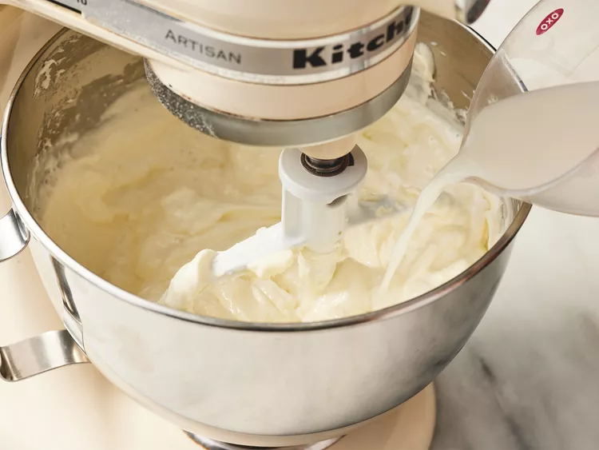

Instructions
Preheat the oven to 350 degrees F (175 degrees C). Grease a 9-inch springform pan.
Mix graham cracker crumbs and melted butter together in a medium bowl until well combined.

Press onto the bottom of the prepared pan to make a packed crust.
Mix cream cheese and sugar together in a large bowl until smooth. Blend in milk, then mix in eggs, one at a time, until just combined.

Add sour cream, flour, and vanilla; mix until smooth.
Pour filling onto prepared crust. Bake in the preheated oven for 1 hour.
Turn the oven off
Let cheesecake cool in the oven with the door closed for 5 to 6 hours to prevent cracking. Chill in the refrigerator until serving.
Any leftovers should be left in the refrigerator and should be served within 3-4 days.